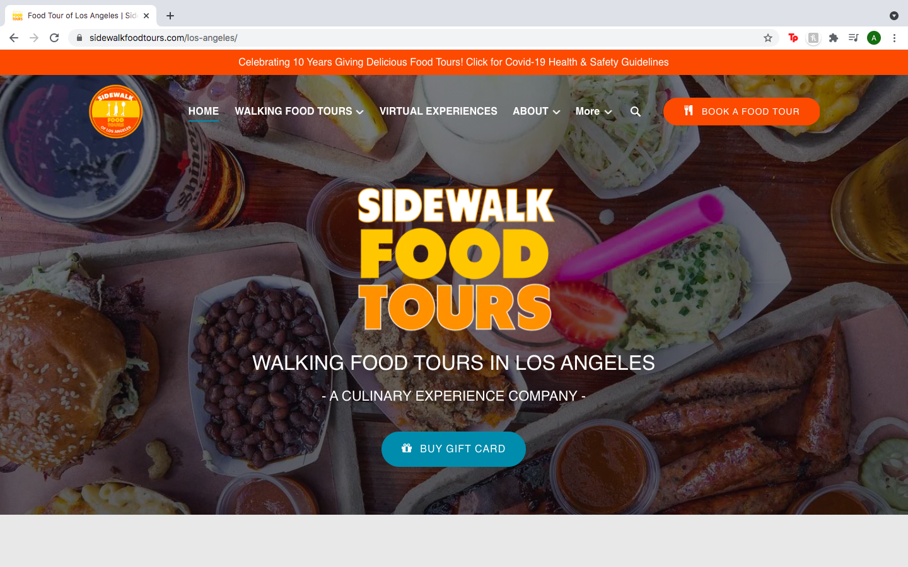

Final project proposal
Introduction
San Fran Food Tours
San Fran Food Tours gives the best food experience possible for visitors to the City by the Bay. We give our customers a personalized experience ranging from casual to high-end eats, and everything in between. Our goal is for every customer to depart from San Francisco feeling full and fulfilled.
Target audience
The people who will use this site are tourists visiting San Francisco or the surrounding Bay Area, or even residents of the Bay Area who are looking for a personalized food experience in SF.
Their primary task is to find a guide to bring them to the restaurants they may not know about prior to their visit, but will meet their desires.
Comparative analysis
Website 1

Website 2
Website 3
Website content
About
We started this business 25 years ago because we love San Francisco food and wanted to share all of our experiences with others. San Fran Food Tours gives the best food experience possible for visitors to the City by the Bay. We give our customers a personalized experience ranging from casual to high-end eats, and everything in between. Our goal is for every customer to leave San Francisco feeling full and fulfilled.
[The bay from the perspective of Embarcadero.]
Tours
We offer three choices for our tours. The first option is a high-end tour of San Francisco eats, full with three meals over the course of a day ($150). Our second option is a casual tour, where you'll visit some of the most iconic fast-casual restaurants in San Francisco ($80). Our third option is a personalized tour, where we will cater a day full of meals to meet your exact desires planned ahead of time ($130).
[The restaurant McCormick and Guleto's in Ghirardelli Square at night.]
Why Choose Us
There are so many food options in the city of San Francisco that it can be overwhelming to get the best mix of it all in one trip. Enter San Fran Food Tours. We will bring you the best food experience possible with great customer service as well.
[San Francisco from an aerial view.]
Contact
Contact us by phone at (415)-999-9999, by email at sanfranfoodtours@gmail.com, or come visit us at our administrative office located at 123 Francisco Street in the Mission District.
[A plate of grilled chicken fettucine alfredo.]